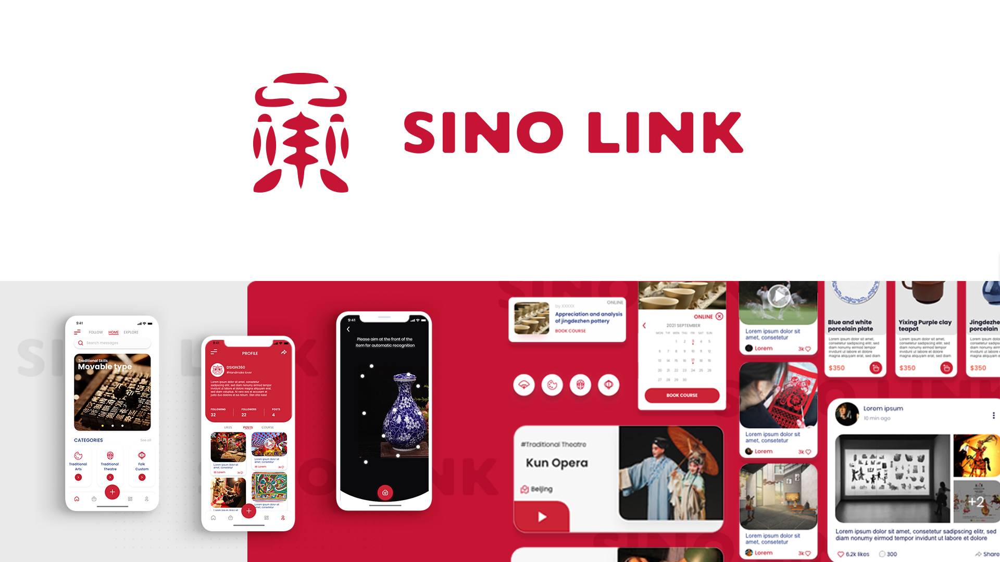

biography
Hi! My name is Xinyu Min and I’ll soon graduate with a Bachelor of Design majoring in Interface Design. Ever since I was little, I have found arts and design very appealing and enjoyable. With a huge passion in photography, illustration, and graphic design, I’d like to pursue a career in the design field in the future.
What attracts me the most about design is the ability to create and innovate. I always feel proud when I turn my thoughts into reality. It brings me a sense of achievement whenever I have expressed my unique ideas through my designs. During my time at The University of Waikato, I have gained a lot of design-related knowledge, which I believe has built a good foundation for my future career. Specifically, I have pursued my interest in UI/UX design, branding, publication, illustration, photography, and video production.
project description
Nowadays, with the strong development in technology and rapid growth in the economy, our lifestyle has
become more abundant and a greater variety of entertainment has become available to us. However, as a
result of the rapid technology evolution, there has been a lack of recognition in traditional skills and
intangible culture inheritance. Some performing arts and folk customs have also been abandoned.
Although there is an increased awareness and recognition of intangible culture heritage in China, there
are still some inevitable problems faced by this society, such as the ageing of existing inheritors and
the lack of new inheritors. Therefore, some cultural heritages seem to be disappearing.
Our project is called ‘SINO LINK’. The aim of the project is to increase people’s awareness of
traditional cultural heritage, through an interactive dissemination of mobile apps and websites, in the
way of "Internet + Intangible cultural Heritage".
My role is to produce an application for the project. The "SINO LINK APP" aims to promote intangible
cultural heritage through learning, sharing, and trading. Through the platform, users can share
information about intangible cultural heritage that they are interested in with each other. At the same
time, they can purchase a side-line range of products and enrol in traditional skills learning courses
and access more intangible cultural heritage-related information. I am also responsible for designing
posters and the side-line range of products for the project, such as stamps and canvas bags, to further
promote our project.
Through the use of "SINO LINK", we hope more people of the younger generation will start to appreciate
the beauty of culture and contribute to the development of cultural inheritance.
SINO LINK

For more information contact us
Email: degreeshow@waikato.ac.nz
Faculty phone: 0800 924 528
Faculty information: cs.waikato.ac.nz